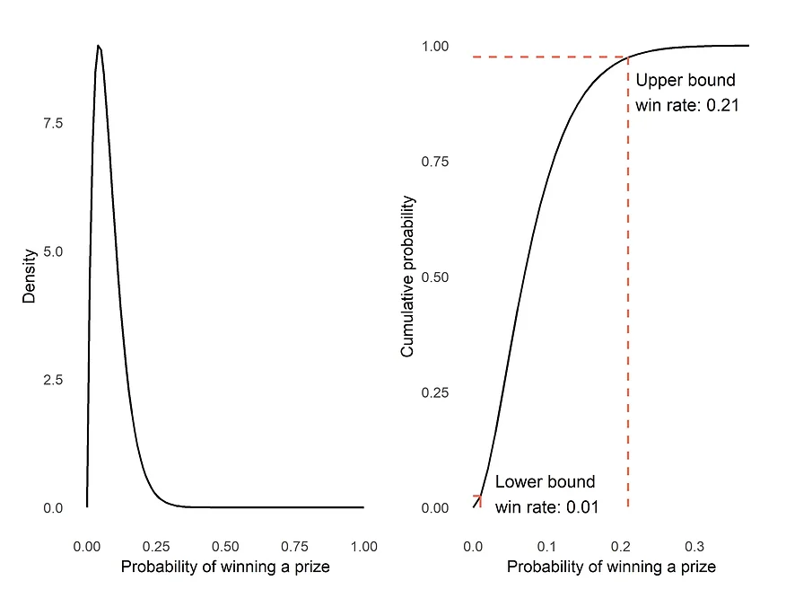
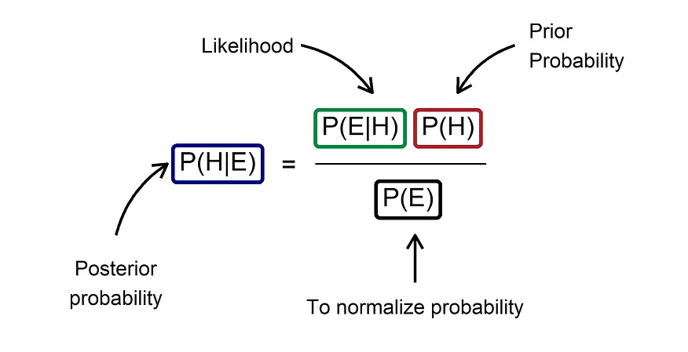
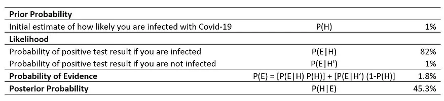
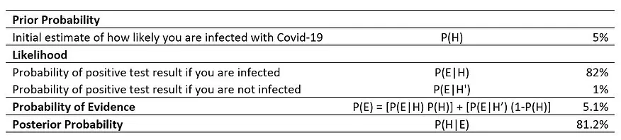
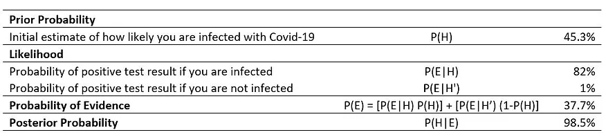

All about that Bayes: Why individuals appraise similar evidence differently?
The world is intrinsically ambiguous, and we usually must make decisions and judgements in our daily lives in the face of uncertainty. Some situations are trivial (e.g., should I bring an umbrella? Can I get a prize from the claw machine?) while some can have heavy consequences (e.g., should I consent to a major surgery? Do I take the covid-19 vaccine?). Probability often guides our decisions in such instances. This article presents how Bayesian inference helps us in reasoning everyday problems and explains why different individuals appraise similar evidence differently.

Probability
Many of us should be familiar with the concept of probability, which refers to the likelihood of an event occurring. Probability of any event can be simply calculated by dividing the number of events of interest by the total number of possible outcomes. For example, the probability of attaining a 4 in a six-sided dice roll is 1/6. Given the assumption that the dice is fair, this implies that you expect to roll a 4 in every six rolls.
Computation of probability is relatively easy when parameters are known. However, this is usually not the case for many situations in our daily lives, in which the parameters are unknown to us. For instance, the probability of winning a prize from a claw machine is harder to ascertain as compared to the dice roll example. Typically, these machines have an operator-adjustable pay out rate that is unknown to players. Thus, how do we determine the probability of receiving a prize from a claw machine?
We may examine n number of trials and record the number of times a player successfully wins a prize. For example, we may observe that a player manages to win 2 prizes in a total of 25 trials. Given such observation, we may infer that the probability of winning is 2/25 or 8%.

We may also model the probability as a continuum using the beta distribution. The beta distribution is a probability distribution on probabilities, defined using two parameters: α and β. In the context of this illustration, α refers to the number of times a prize was won from the claw machine (i.e., 2) and β represents the number of times that a prize was not won (i.e., 23). The figure above presents the probability density function and cumulative distribution function of the beta distribution. The graph on the left informs us that most of the plot’s density is less than 0.2, and we can estimate the 95% confidence interval of the win rate to be approximately between 1% and 21% using the graph on the right. These numbers strongly suggest that the actual likelihood of winning a prize from this claw machine is 20% or less. While it is impossible to deduce the true win rate, both graphs certainly provided more information than a discrete probability value.
This approach of observing data and determining the probability of an event occurrence is commonly used in academia and taught in schools. Such interpretation of probability is also known as frequentist inference. As defined by Wikipedia, this method of inference “draws conclusions from sample data by emphasizing the frequency or proportion of the data”. While this may be an objective way of quantifying uncertainty and likelihood, it does not align with how we behave and reason things in our daily lives. For example, given our calculated probability on winning the claw machine above, there are people who may decide to take their chances and others who refrain from it despite seeing the same evidence. The limitation of the frequentist school of thought is the lack of account for differing prior beliefs among different individuals.
Bayesian inference: Quantifying and updating our beliefs
In our daily lives, probability is not only used to describe data but also a way to quantify the strength of our beliefs in things about the world (e.g., I think the sun is likely to rise tomorrow, I am confident that the company will still exist in ten years’ time). Our beliefs change consistently as we experience new things and observe new evidence. Another school of thought, Bayesian inference, reflects exactly such process of quantifying and updating our beliefs.
The term “Bayesian” originated from an English statistician and Presbyterian minister, Thomas Bayes. He devised the Bayes’ Theorem, which is a concept of conditional probability defined by the formula below. P(A|B) refers to the probability that event A occurs given that event B has already occurred. Bayes Theorem purports that we can work out the probability of P(B|A) if we know the reversed conditional probability, P(A|B).
The approach of using Bayes Theorem for subjective probability-based inference was instead popularized by a French scholar, Pierre-Simon Laplace. Such method of inference is termed Bayesian inference, which expresses how the probability of a hypothesis or state of belief should change given new evidence. Now, let us adapt the Bayes Theorem to the context of hypothesis (H) and observed evidence (E).

In the context of Bayesian inference, P(H|E) is referred to as the posterior probability, which represents how strongly we believe in our hypotheses given the evidence we observed. This can be derived using two key components: the likelihood, and the prior probability. First, the likelihood, P(E|H), represents the probability of the evidence given our hypothesis. This component is akin to how we calculate probability using the frequentist approach. Second, the prior probability, P(H), denotes the strength of our belief in our hypothesis before we observed the evidence. This is the key component that separates the frequentist and Bayesian inference approach. Last, we need P(E) to normalize our posterior probability to a value between 0 and 1.
Example: What is the probability of Covid-19 infection if you have a positive antigen rapid test?
Let us suppose you are in Singapore and you are tested positive for Covid-19 infection using an antigen rapid test (ART). As reported in this news article, the ART’s sensitivity (true positive rate) is 82% and its specificity (true negative rate) is 99%. This also indicates that the false positive rate is 1%. Given that we googled and found that the rate of Covid-19 infection in Singapore is approximately 1% at present, what is the probability of infection if you receive a positive swab test?

The table above informs us that the probability of infection is 45.3% after accounting for our prior belief that the rate of infection is 1%. This example also highlights the difference in inference between a frequentist and Bayesian approach. If we do not account for any prior probability, we would have assumed that the probability of infection is equivalent to the likelihood of 82% since that is the true positive rate of the test.
Now, let us examine the difference in posterior probability if we have a different prior probability. For example, if somebody hypothesizes that the infection rate is higher at 5%, what is the probability of infection given a positive swab test?

As presented in the new table, the new posterior probability increases to 81.2%. Given the same evidence, one who has a higher prior probability is more certain of infection as compared to somebody who has a lower prior probability. This may have implications on mental health since fear and anxiety levels probably differ between 45% and 81% chance of infection.
Updating our beliefs
The heart of Bayesian inference is the concept of updating our beliefs as we gather new evidence. Importantly, this is a continuous process. Let us take our example one step further and suppose that we took the ART a second time and tested positive again. What will be our new posterior probability?

We change our prior probability to 45.3% based on the first test result and calculate the posterior probability again. The table above informs us that the updated odds of infection is 98.5%. Clearly, we should go to the hospital immediately!
Prior beliefs matter
The use of Bayes Theorem demonstrates the importance of prior beliefs in appraising the same evidence. Many of our beliefs and hypotheses about the world differ from person to person. As illustrated in the example, different prior beliefs can result in contrasting posterior probabilities. This plausibly explains why individuals appraise similar evidence differently and thus different behaviours. Thus, it is important to note that probability does not just describe randomness, but also expresses strength of individual beliefs, and their interaction informs our decisions and judgements in daily lives.